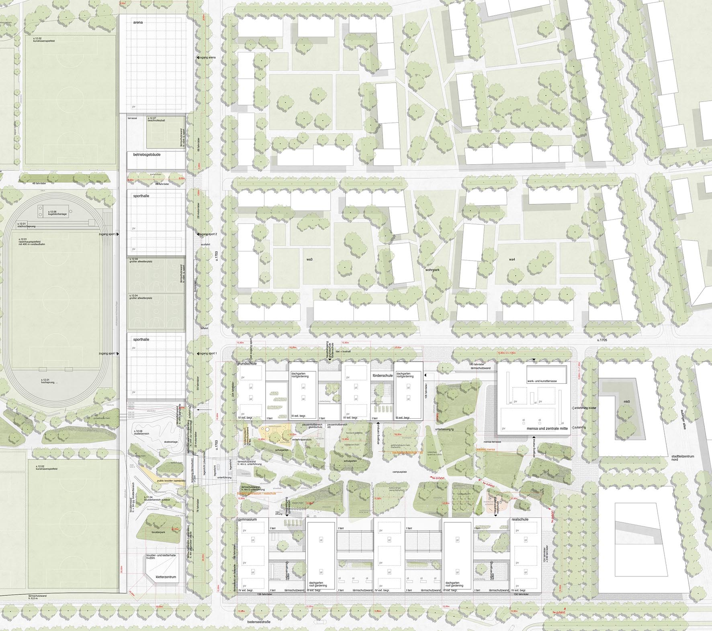
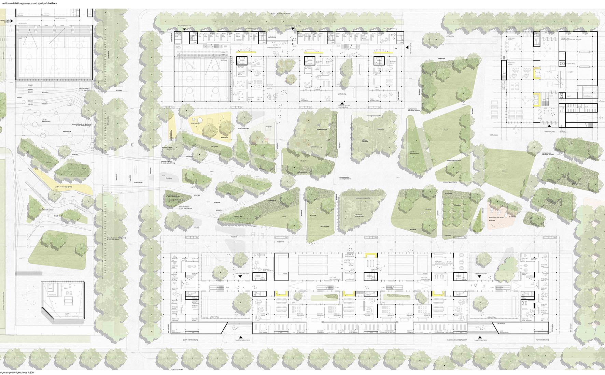
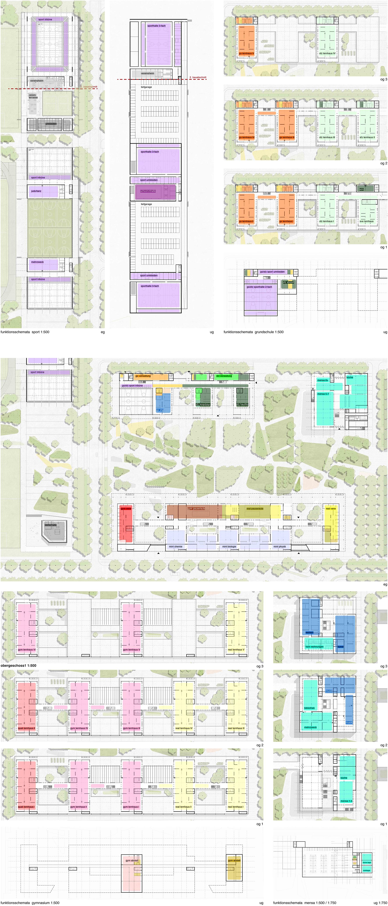
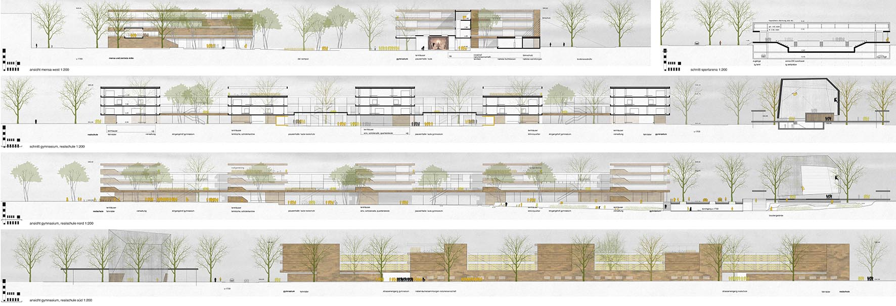
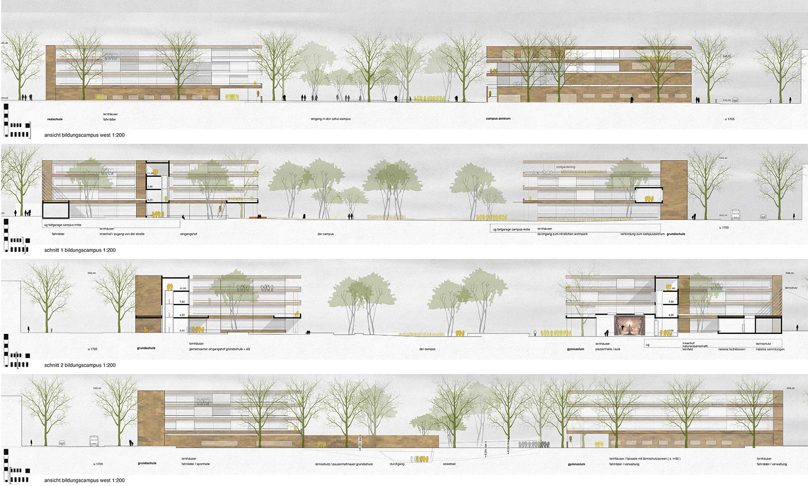
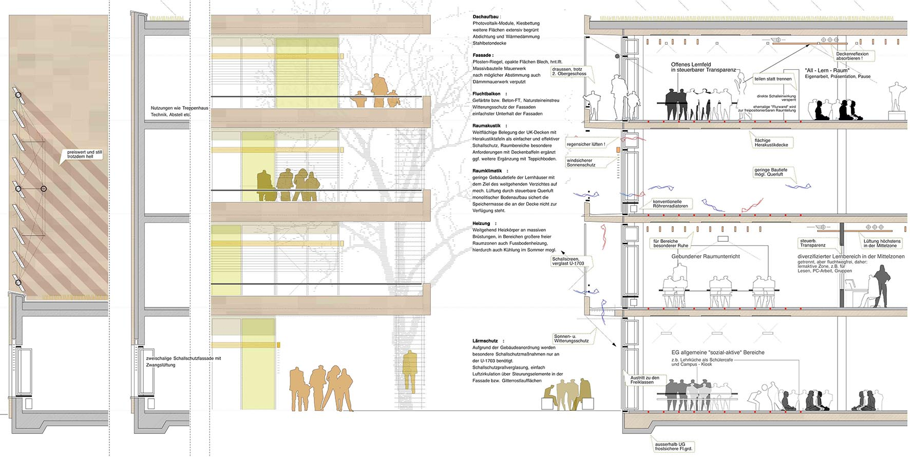
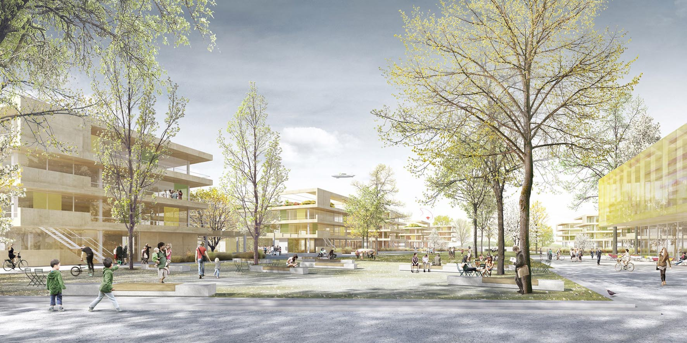
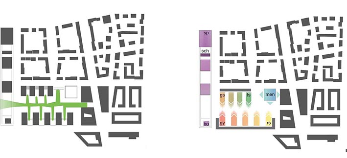
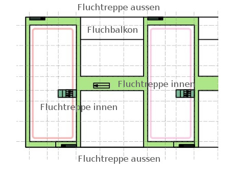

-

Lageplan

Erdgeschoss

Funktionsschemata

Ansichten / Schnitte

Ansichten / Schnitte

Fassadedetail

Aussenperspektive
DIE AUSGANGSSITUATION
Das umzusetzende städtebauliche Konzept entwickelt eine starke Setzung in der Verknüpfung markanter, stadträumlicher Gliederungen und der kontrastierenden Forderung nach fließenden grünräumlichen Bezügen.
DAS BILD DER SCHULE/STÄDTEBAULICHES UMFELD/DAS KONZEPT
Das Bild der Schule/Städtebauliches Umfeld/Das Konzept Die Sichtbarwerdung der Schulen verfolgt zwei vermeintlich divergierende
Ansätze.
Zum einen die Erkennbarkeit der Schulen selbst, und die selbstbewusste Inszenierung des Schulzentrums als wichtige gesellschaftliche
Keimzelle in den Stadtraum hinein. Aus dieser Dualität speist sich ein ebenso dualistisches Prinzip unseres Wettbewerbsbeitrags.
Die Baukörper besetzen nach außen die stadträumlich wichtigen Kanten des Geländes und markieren damit den Schulcampus
in seinen äußeren Grenzen als Summe seiner Adressen „Gymnasium-Realschule“, „Grundschule-Förderzentrum“, „Mensa“ und
„Sport“. Gleichzeitig fächern sich die Baukörper nach innen auf in eine den Lernhäusern entsprechende Vielgliedrigkeit,
und suchen eine enge Verzahnung mit dem Grünraum des Campus.
MATERIALITÄT
Diese Dualität drückt sich auch in der gewählten Materialität aus : Sichtmauerwerk als Wertzeichen öffentlicher Bauten, und schwebende Geschossdecken als Transparenz und Offenheit nach Innen als Zeichen der „offenen Schule“
GEBÄUDEKONFIGURATION LERNHÄUSER
Die Ausbildung der Lernhäuser leistet zweierlei : Ablesbarkeit nach außen hin „schau: da ist mein Lernhaus“ Gleichzeitig verknüpft das gemeinsame bauliche und sozialen Funktionen dienende Sockelgeschoss der Einbindung in die Gemeinschaft der Schulen. Die Verknüpfung der verschiedenen Schulhäuser bietet damit nicht nur wirtschaftliche Synergien, sondern ermöglicht die sozial-übergreifende Ausbildung einer gemeinsamen Identität aller vier Schulfamilien zu EINEM Schulquartier. Dies wird unterstützt durch die gestaltgleiche Ausbildung der Lernhäuser für alle Schultypen und Jahrgänge hinweg. Den unterschiedlichen Bedürfnisse der verschiedenen Altersgruppen von Grundschule bis Gymnasium wird durch differenzierte Raumbildungsstrategien im Spannungsfeld zwischen geschlossenen Räumen und transparenten bzw. offenen Raumkontinua Rechnung getragen.
GRUNDRISSORGANISATION
DIE NATURWISSENSCHAFTLICHEN LEMFELDER
Die naturwissenschaftlichen Lernfelder Im Gegensatz zur raumpädagogischen Entwicklung der allgemeinen Klassenbereiche verharrt der naturwissenschaftliche Unterricht zumeist noch in einer separatistischen Raum-Flur-Struktur. Wir schlagen in unserem Entwurf vor : Auflösung der Unterrichtsbereiche in notwendig hochinstallierte Kern-Räume des Fachunterrichtes; Öffnung der weiteren Bereiche in offene Raumzonen mit niederinstallierten Experimentalfeldern. zusammenfassen weitere Lehrräume zu einem offenen, interdisziplinären naturwissenschaft- lichen Lernfeld.
BAULICHER AUFBAU LERNHÄUSER
DieLernhäuser entwickeln sich entsprechend der geforderten Typologie flächenhaft,gleichzeitig werden die Bautiefen sinnvoll begrenzt. Dadurch erreichen wir :Verzichtaufinnere Lichthöfe und deren aufwendige,unbefriedigende Lichtausbeute und brandschutz technischen Probleme,Fassaden kontakt aller Räume mit natürlicher Belichtung und Belüftung,Gliederende Zonierung bietet die Möglichkeit einer entwicklungsverträglichen Zuordnung in die Jahrgänge 5-7 und 8-10, eine ausschließlich gemeinsam nutzbare Mitte wirdvermieden.
BRANDSCHUTZ
Ein umseitiges Konzept von Fluchtbalkonen befreit den Lernhausgrundriss von Fluchtweganforderungen. Innenliegende Bereiche werden ebenfalls durch die Fluchtbalkone und die Treppenhäuse rentflüchtet.Transparenz und teilweise Raumöffnungen garantieren die rechtzeitige Brandwahrnehmung.
KONZEPT UND BAULICHER AUFBAU / DIE SPORTHALLEN
Die Sporthallen und die ergänzenden Raumflächen werden in einem einfachen abe kräftigen Konzept von schwebenden Decksflächen
zu einer kla rablesbaren Einheit zusammengefasst. Zwischen zwei diese Struktur begleitenden Mauern spannen sich die
ebenfalls bewusst einfachen Tragwerke der Hallen.
Holzbinder für die kleinen Hallen bzw. parallelflanschige Stahlprofile für dieArena verbleiben im Dunkelraum der Dächer
und ermöglichen dami teinfache Konstruktionen mit reduzierbarem gestalterischen Anspruch.
BAULICHER AUFBAU / DIE TIEFGARAGEN
Die Organisation der Sportanlagen auf einem „schwebenden“ Deck ermöglicht die vollständige natürliche Belüftung und Entrauchung der Tiefgaragen ( 1. BA ) und vermeidet kostenintensive mechanische Lüftungen. Darüberhinaus werden dadurch Angsträume vermieden.
AUßENANLAGEN / GRÜNRAUM CAMPUS
Das dualistische Prinzip zeigt sich im Campuspark in mehrfacher Weise. Um der zu erwartenden intensiven Nutzung durch
die Schülerinnen und Schüler stand zu halten, bestimmen großzügige befestigte Flächen den Park und lassen ihn so mehr
Platz denn Park sein. Die Vernetzung des Parks mit dem Stadtteilzentrum und dem Sportpark bzw. dem Landschaftspark Freiham
gibt eine fließende Ostwestrichtung vor. Gleichzeitig nimmt er die Nordsüd ausgerichteten. Lernhäuser auf und verzahnt
sich mit den Schulbaukörpern.
Sitzkanten und Stufen werden genutzt um Rasen und Wiesenflächen entstehen zu lassen und leiten dadurch zur notwendigen
Absenkung an der Unterführung über. Mit einem Gefälle bis zu 3,5% erfolgt die Höhenüberwindung sanft und nahezu unbemerkt.
Der V-förmig verschränkte Querschnitt, die Belichtung über die Öffnung im Bereich der Baumstreifen und eine musikalische
Kunstinstallation reduzieren den Angstraum Unterführung. Pergolen, Dächer und Wandscheiben schließen den Park zu den
Straßen ab und schaffen einen kontrollierten Innenraum.
Der Innenraum liegt etwas tiefer als der umgebende Straßenraum und verstärkt so den Eindruck in den geschützten Campuspark
einzutauchen.Gräserfelder und- bänder markieren den Übergang von außen nach innen zusätzlich und bilden gleichzeitig
ein subtile und zugleich integrierende Abgrenzung zwischen öffentlichen Freiraum und den Schulbereichen und leiten bis
in den Sportpark bzw. Landschaftspark.
Auf der Seite des Sportparks entwickeln sich aus den fließenden Bewegung Wandscheiben zum Bouldern.Sitzstufen schaffen
Skater-Terrassen und gleichzeitig Bereiche zum Beobachten der sportlichen Aktivitäten. Die Terrassen und sanft ansteigenden
Flächen vermittelt von der Unterführung zum Landschaftspark. Entsprechend dem fließende Raum werden auch die Belagsflächen
homogen aus beige abgestreutem Olympiamastix ausgeführt.
ÖKOLOGIE / NACHHALTIGKEIT
Der nachhaltigen und ökologischen Planung,Konstruktion und Ausführung der Schulen kommt nicht nur unter baulichen Gesichtspunkten
hohe Bedeutung zu,sondern gerade eine Schule bietet die Möglichkeit der intensiven Bewusstseinsschulung im Umgang und
im Leben mit und in nachhaltigen Gebäuden. Dabei wird die Nachhaltigkeit eines Projektes gewährleistet durch sorgfältig
ausgewählte Materialien, die über ihren gesamten Lebenszyklus von der Herstellung (graue Energie), über ihre Eigenschaften
in verbauten Zustand (Raumklima,Wärmedämmung etc.)bis zur Wiederverwertbarkeit betrachtet werden. Auf die vorgeschlagenen
Materialien (soweit in diesem Stadium hierzu schon konkrete Angaben gemacht werden können)heißt das: Stahlbeton/dichtes
Netz an Betonwerken ermöglicht kurze Transportwege. Einsatz von Sekundärrohstoffen,wie Hüttensand oder Flugasche, senkt
Zementanteil und somit den Anteil an grauer Energie. Nach Ende des Lebenszyklus der Gebäude lässt sich Beton rückbauen
und wiederverwenden.
Glas / Bedingt durch die bewusste Einsetzung massiver Gebäudeelemente erreichen wir ein sehr gutes Verhältnis zwischen
offen und geschlossenen Fassadenflächen, dies senkt den Bedarf an Kunstlicht und beeinflusst die Wärmebilanz der Gebäude
positiv. Die Fluchtbalkone und der außenliegende Sonnenschutz gewährleistet den sommerlichen Wärmeschutz. Die Anordnung
der Fluchtbalkone ermöglicht darüberhinaus eine einfache kostengünstige Reinigung der Fensterflächen.
Fassaden / Fluchtbalkone aus gefärbten Betonfertigteilen bewirken als Dachüberstand eine hervorragenden Schutz der Fassade.Sockelzonen
und Rückgrat aus Sichtmauerwerk, robust,unempfindlich gegen Vandalismusundlanglebig.
Innenausbau / Im Innenausbau wird auf Homogenität wertgelegt. Wenige sorgfältig ausgewählte Materialen (Lino,Holz, magnesitgebundene
Holzwolle für die Akustik) gewährleisten wenige unterschiedliche Entsorgungswege. Dabei wird vor allem auf die leichte
Trennbarkeit der Materialien geachtet durch geklemmte oder geschraubte Verbindungen.Schadstofffreiheit ist Vorrausetzung
für ein angenehmes Raumklima, sowie für die spätere Recyclingfreundlichkeit. Energetische Konzeption Hochenergetische
Standards sind mittlerweile Stand der Technik, so dass im konkreten Planungsprozess in den bekannten Strategien nahezu
alle energetischen Standards erzeugt werden können. Insbesondere eine „justierbare“Unterschreitung der EnEV erscheint
uns als schlüssigerer und sinnvollerer Weg als die hohen Aufwendungen einer „punktgenauen“ PHPP-Zertifizierung anzustreben.
Es ergeben sich aus den Parametern : nachhaltige Wärmegewinnung (Fernwärme), flächenhafte Wärmeverteilung, weitgehende
Verzicht auf mechanische Lüftungen bzw.zentraler oder dezentraler Luftverteilung bei verträglich geringen Luftwechseln,
zahlreiche Modelle um auch ohne hohen Steuerungsaufwand- das im Projekt zu definierende Ziel zu erreichen.
Elemente wie weitgehend natürliche Fensterlüftung bei moderaten Raumtiefen, der Einsatz von PV-Elementen auf Dächern
und Fassaden, Grauwassernutzung etc. ergänzen das Konzept. Angesichts der großen Dachflächen, die eine Überversorgung
der Gebäude gewährleisten schlagen wir einen Verzicht auf die ineffektiveren vertikalen ( Verschattung durch die Bäume
) vor.